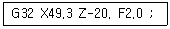
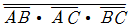

생산자동화기능사 (2008-10-05 기출문제)
1과목: 기계가공법 및 안전관리(대략구분)
1. 그리스(grease) 윤활의 장점으로 틀린 것은?
- 급유횟수가 적고 경제적이다.
- 사용온도 범위가 비교적 넓다.
- 고속회전에 적합하다.
- 장시간 사용에 적합하다.
(정답률: 51%)

2. 광물섬유를 화학적으로 처리하여 원액과 물을 혼합 사용하여, 표면 활성제와 부식 방지제를 첨가하여 사용하는 절삭 유제는?
- 석유
- 광유
- 지방질유
- 수용성 절삭유
(정답률: 66%)
3. 밀링 작업에서 절삭속도 선정 방법이 잘못된 것은?
- 커터 수명을 연장시키기 위해서는 추천 절삭속도보다 절삭속도를 약간 낮게 한다.
- 공작물의 강도, 경도 등 기계적 성질을 고려한다.
- 황삭가공에서는 절삭속도를 느리게, 이송을 빠르게 선점한다.
- 커터의 날 끝이 빨리 마모되는 경우에는 절삭속도를 증가시킨다.
(정답률: 74%)
4. 기계적 에너지로 진동을 하는 공구와 가공물 사이에 연삭입자와 가공액을 주입하고서 작은 압력으로 공구에 진동을 주어 가공하는 방식으로, 유리, 세라믹, 다이아몬드, 수정 등 취성이 큰 재료를 가공할 때 사용하는 특수가공법은?
- 전해 가공
- 초음파 가공
- 방전 가공
- 전주 가공
(정답률: 53%)
5. 연삭 균열을 방지하기 위한 방법이 아닌 것은?
- 결합도가 연한 숫돌을 사용한다.
- 연삭 깊이를 크게 한다.
- 연삭액을 충분히 사용한다.
- 이송을 빠르게 한다.
(정답률: 60%)
6. 양 센터로 지지하고 편심량을 다이얼 게이지로 측정하였더니 0.04 mm 움직였다. 이 때 편심량은 몇 mm인가?
- 0.01
- 0.02
- 0.04
- 0.08
(정답률: 58%)
7. 유도 방출에 의한 빛의 증폭 작용을 이용한 가공 방법으로 구멍내기 가공, 절단 및 홈 자르기, 용접, 투명체 속가공을 할 수 있는 가공 방법은?
- 방전 가공
- 플라스마 가공
- 레이저 가공
- 전자 빔 가공
(정답률: 53%)
8. 나사마이크로미터는 일반적으로 수나사의 무엇을 측정하는 데에 사용하는가?
- 유효지름
- 골지름
- 패치
- 나사신의 각도
(정답률: 75%)
9. 선반 작업에서 지켜야 할 안전 사항이 아닌 것은?
- 가동 전에 각종 레버, 하프너트, 자동장치를 점검한다.
- 가동 전에 주유 부분에는 반드시 주유하다.
- 전기배선의 절연상태는 양호한가 점검한다.
- 장갑과 보호안경을 반드시 끼고 작업한다.
(정답률: 83%)
10. 선반에서 Ø50 mm의 저탄소강을 절삭속도 150 m/min로 가공하려면 주축 회전수는 약 몇 rpm 인가?
- 750
- 850
- 955
- 1400
(정답률: 51%)
2과목: 기계제도(대략구분)
11. 축의 원주에 많은 키를 깎은 것으로 큰 토크를 전달시킬 수 있고, 내구력이 크며, 보스와의 중심축을 정확하게 맞출 수 있는 키는?
- 성크 키
- 반달 키
- 점선 키
- 스플라인
(정답률: 64%)
12. 흰색 금속으로 열전도도가 우수하며, 상온에서 감지성체이나 358℃ 부근에서는 자기 변태로 자성을 잃는 금속은?
- 니켈(Ni)
- 주석(Sn)
- 아연(Zn)
- 알루미늄(Al)
(정답률: 57%)
13. 두랄루민에 대한 설명으로 틀린 것은?
- 항공기의 주요재로 등에 사용된다.
- 두랄루민 주성분은 Al-Cu-Mg-Mn이다.
- 금형에 융용상태의 합금을 가압 주입하여 만든다.
- 물에 담금질 후 상온에서 시효경화하여 만든다.
(정답률: 41%)
14. 피치원지름 165 mm이고 잇수 55 인 표준평기어의 모듈은?
- 2
- 3
- 4
- 6
(정답률: 79%)
15. 기계적 성질로만 짝지워져 있는 것은?
- 비중, 융용점, 비열, 선팽창 계수
- 인장강도, 연신율, 피로강도, 경도
- 내열성, 내식성, 충격강도, 자성
- 주조성, 단조성, 용점성, 비중
(정답률: 65%)
16. 베어링용 합금이 갖추어야 할 조건이 아닌 것은?
- 내식성이 좋아야 한다.
- 마찰계수가 적어야 한다.
- 열전도율이 작아야 한다.
- 내마모성이 커야 한다.
(정답률: 46%)
17. 크랙(crack)방지와 변형을 감소시키기 위하여 실시하는 열처리 방식으로서 그 모양이 S자 C자이므로 S곡선, C곡선이라고도 하는 TTT 곡선을 이용한 열처리 방식은?
- 담금질 열처리
- 항온 열처리
- 표면 경화법
- 고주파 경화법
(정답률: 46%)
18. 표면 경도를 필요로 하는 부분만을 급랭하여 경화시키고 내부는 본래의 연한 조직으로 남게 하는 주철은?
- 칠드 주철
- 가단 주철
- 구상흑연 주철
- 내열 주철
(정답률: 43%)
19. 운동용 나사에 해당되지 않는 것은?
- 사각나사
- 사다리꼴 나사
- 불나사
- 관용나사
(정답률: 54%)
20. 구리에 아연을 5-20%를 첨가하여 색깔이 아름답고 장식품에 많이 쓰이는 활동은?
- 포금
- 문쯔메탈
- 톰백
- 7:3 황동
(정답률: 53%)
21. 스프링강의 재료로 적합하지 않은 것은?
- Cr - V 강
- Cr - Mn 강
- Sl - Mn 강
- Ni - Co 강
(정답률: 55%)
22. 브레이크 드럼이 브레이크 블록을 밀어 붙이는 힘이 1000N이고 마찰계수가 0.45일 때 드럼과 블록 사이에 작용하는 마찰력은 몇 N 인가?
- 150
- 250
- 350
- 450
(정답률: 73%)
23. 벨트를 걸었을 때 이완 쪽에 설치하여 벨트와 벨트 풀리의 접촉각을 크게 하는 것을 무엇이라고 하는가?
- 단 차
- 안내 풀리
- 중간 풀리
- 긴장 풀리
(정답률: 45%)
24. 에너지 흡수 능력이 크고, 스프링 작용 외에 구조용 부재로서의 기능을 겸하고 있으며, 재료 가공이 용이하여 자동차 현가용으로 많이 사용하는 스프링은?
- 태엽 스프링
- 판 스프링
- 공기 스프링
- 코일 스프링
(정답률: 47%)
25. 지름 20 mm, 표점거리 100mm인 연강재 시험편을 인장시험하였더니, 표점거리가 103 mm 변하였다. 이 때 변형율은 얼마인가?
- 0.02
- 0.03
- 0.04
- 0.⑤
(정답률: 73%)
26. CAD에서 일정한 거리와 각도를 가진 좌표를 입력하는 방식은?
- 절대좌표 입력방식
- 상대좌표 입력방식
- 극좌표 입력방식
- 최종좌표 입력방식
(정답률: 44%)
27. 컴퓨터 중앙처리장치(CPU)의 주된 기능을 설명한 것 중 틀린 것은?
- 외부와의 정보교환과 내부 장치 간의 신호제어 및 명령어 등을 제어한다.
- 찾아낸 명령을 해석하기 위해 명령어를 임시로 보관한다.
- 프로그램 카운터에 있는 어드레스에 의해서 다음에 실행할 명령을 찾아낸다.
- 프로그램이나 데이터를 입력한다.
(정답률: 50%)
28. CAD/CAM에 사용하고 있는 CRT 장치의 종류에 해당되지 않는 것은?
- 랜덤 스캔형
- 스토리지형
- 래스터 스캔형
- 플랫 배드형
(정답률: 44%)
29. CAD/CAM을 이용한 자동화에 대한 설명으로 틀린 것은?
- 도면의 표준화를 기할 수 있다.
- 공정계획의 자동화를 기할 수 있다.
- 생산과 재고관리를 원만하게 할 수 있다.
- 재료구입비가 증가된다.
(정답률: 89%)
30. 다음 블록을 수행하여 나사를 가공하였을 때, 이 나사의 리드는 얼마인가?

- 15.mm
- 2.0mm
- 2.5mm
- 3.0mm
(정답률: 79%)
3과목: 메카트로닉스 일반(대략구분)
31. PTP(point to point)제어라고도 하며, 이동하는 도중에는 가공을 하지 않는 제어방법을 무엇이라 하는가?
- 직선절삭 제어
- 위치결정 제어
- 윤곽절삭 제어
- 속도 제어
(정답률: 76%)
32. 다음 NC 시스템 중 소프트웨어에 속하는 것은?
- 인터페이스 회로
- 제어용 컴퓨터
- 검출기구
- 파트 프로그램
(정답률: 48%)
33. NC 시스템을 사용한 생산 시스템의 발전과정 순서가 옳은 것은?
- CNC → NC → DNC → FMS
- NC → DNC → FMS → CNC
- NC → DNC → CNC → FMS
- NC → CNC → DNC → FMS
(정답률: 69%)
34. 다음 중 자동공구교환장치(ATC : Automatic tool changer)가 설치된 CNC공작기계는?
- CNC와이어 컷 방전가공기
- 세이퍼
- CNC평면연삭기
- 머시닝 센터
(정답률: 65%)
35. G04를 이용하여 휴지(dwell)시간을 지령하는 방법으로 잘못된 것은?
- G04 X3 ;
- G04 U3 ;
- G04 K3 ;
- G04 P3000 ;
(정답률: 53%)
36. 공기 공급을 연속적으로 부드럽게 공급하므로 액통과 소음이 적고 컴팩트하여 공기압 모터 등의 동력원으로 이용되는 회전식 공기압축기는?
- 베인형 압축기
- 터보형 압축기
- 루트 플로워
- 피스톤형 압축기
(정답률: 61%)
37. 회로망이 설정압을 넣으면 막(膜)이 유체압에 의하여 파열되어 유압유를 탱크로 귀환시킴과 동시에 압력 상승을 막아 기기를 보호하는 역할을 하는 것은?
- 감압밸브
- 압력스위치
- 체크밸브
- 유체퓨즈
(정답률: 65%)
38. 유압유에 비해 압축공기의 특성을 설명한 것으로 틀린 것은?
- 탱크 등에 저장이 용이하다.
- 온도에 극히 민감하다.
- 폭발과 인화의 위험이 거의 없다.
- 먼 거리까지도 쉽게 이송이 가능하다.
(정답률: 68%)
39. 공기저장탱크의 설치시 기본적으로 부착되는 기기가 아닌 것은?
- 압력계
- 압력스위치
- 안전밸브
- 유량계
(정답률: 76%)
40. 주회로의 압력보다 저압으로 감압시켜 분기회로 구성에 사용되는 밸브의 명칭은 무엇인가?
- 시퀀스 밸브
- 체크 밸브
- 감압 밸브
- 우부하 밸브
(정답률: 85%)
41. 유압펌프의 종류에서 용적형 펌프가 아닌 것은?
- 기어 펌프
- 베인 펌프
- 원심 펌프
- 피스톤 펌프
(정답률: 50%)
42. 압력의 표시단위가 아닌 것은?
- Pa
- bar
- atm
- N·m
(정답률: 77%)
43. 유압용 축압기(accumulator)의 용도가 아닌 것은?
- 유압에너지 축적
- 유압 펌프의 액독 흡수
- 유압 충격 완충용
- 유압 작동유의 냉각
(정답률: 62%)
44. 유량제어 밸브를 실린더에서 유출되는 유량을 제어하도록 설치하여 피스톤의 속도를 제어하며 밀링머신, 보링머신 등에 사용되는 회로는?
- 미터 인 회로
- 미터 아웃 회로
- 블리드 오프 회로
- 인로딩 회로
(정답률: 53%)
45. 일반적으로 공압 액츄에이터나 공압기기의 작동압력으로 가장 알맞은 압력(kgf/cm2)은?
- 1~2
- 4~6
- 10~15
- 40~55
(정답률: 72%)
46. 사다리 선도라고도 하며, 입력과 출력을 조합하여 프로그래밍하는 PLC프로그램의 작성 방식은?
- 래더도
- 플로우차트
- 타임차트
- 객체지향방식
(정답률: 75%)
47. PLC에서 주변장치를 사용하여 프로그램을 메모리에 기억시키는 작업을 무엇이라고 하는가?
- 로딩
- 코딩
- 입력할당
- 출력할당
(정답률: 72%)
48. 로봇 매니플레이터(manipulator)에 해당하는 것은?
- 로봇의 손, 손목, 팔
- 로봇 컨트롤러
- 로봇의 눈
- 로봇의 전원장치
(정답률: 78%)
49. 검출용 스위치에 해당하지 않는 것은?
- 토글 스위치
- 마이크로 스위치
- 리미트 스위치
- 광전 스위치
(정답률: 64%)
50. 다음 중 자동화 기기에 많이 사용되는 액츄에이터는?
- PLC
- 근접센서
- 리미트스위치
- 공압실린더
(정답률: 63%)
51. PLC 입·출력부의 요구사항이 아닌 것은?
- 외부기기와 전기적 규격이 일치하고 접속이 용이할 것
- PLC 내부는 약전 회로인데 강전 회로인 외부기기와 접속이 가능하도록 할 것
- 입 · 출력의 각 접점상태를 감시할 수 있을 것
- 외부기기로부터 잡음이 CPU 쪽에 잘 전달되도록 할 것
(정답률: 71%)
52. 되먹임 제어에 속하는 것은?
- 서보제어
- 한시제어
- 조건제어
- 순서제어
(정답률: 61%)
53. 릴레이 시퀀스와 비교하여 무접점 시퀀스의 장점이 아닌 것은?
- 고빈도 사용에도 수명이 길다.
- 전기적 잡음에 대하여 안정하다.
- 진동이나 충격에 잘 견딘다.
- 동작속도가 빠르다.
(정답률: 60%)
54. 제어계의 입력신호에 대한 출력신호의 관계를 나타낸 것은?
- 목표값
- 전달함수
- 제어대상
- 제어량
(정답률: 52%)
55. PLC의 제어기능과 관계없는 것은?
- 노이즈 방지 기능
- 시퀀스 처리 기능
- 자기진단 기능
- 연산 처리 기능
(정답률: 68%)
56. 일상 생활에서 사용되는 엘리베이터, 세탁기 및 자동판매기와 같이 정해진 순서에 의해 제어되는 방식은?
- 시퀀스 제어
- ON 제어
- 전압 제어
- 되먹임 제어
(정답률: 88%)
57. 측정 대상물에 직접 접촉하지 않으면서 온도를 검출하는 비접촉식 온도센서는?
- 열전항
- 서미스터
- 측온저항체
- 적외선센서
(정답률: 68%)
58. 압전 소자에 힘을 가하면 무엇이 생성되는가?
- 저항
- 빛
- 기전력
- 불나사
(정답률: 61%)
59. 온도센서인 열전대(Thermocouples)의 구비조건으로 잘못된 것은?
- 온도-열기전력 특성의 분산이 작을 것
- 가공이 쉽고, 가격이 저렴할 것
- 열기전력이 작을 것
- 열기전력 특성이 선형적일 것
(정답률: 65%)
60. 논리식

를 드모르간 정리에 의해 변환하면 어떻게 되는가?- AB+(AC)'
- AB+AC+BC
- ABㆍACㆍBC
- Aㆍ(B+C)
(정답률: 63%)